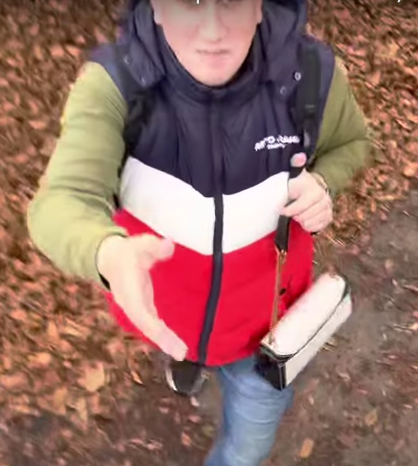

Bence kuhár humorműsora
Szeretettel várunk mindenkit a parkba ahol az országszerte ismert humorista, Kuhár Bence fogja nevettetni virágos községünk lakóit.
Bence elmondása szerint "soha nem láttam még ilyen községet, remélem nem lesznek itt Kínai kisfiúk, akik godzillának hívnak", mondta Bence Kuhár, utalva az egyik hírhett viccére
Kuhár Bence elmondása szerint, izgatottan várja a péntek esti műsört
Izgalmas hírekkel szeretnénk megörvendeztetni Önöket! Kuhár Bence, Magyarország egyik legismertebb humoristája és szórakoztató előadója, hamarosan Zöldhalom parkjában felállított színpadon adja elő legfrissebb és legkacagtatóbb műsorát! Ez az esemény egy igazi kulturális csemegének ígérkezik, amely garantáltan mosolyt csal majd az arcokra.
Bence, akinek vicces és éles szemű megfigyelései, valamint egyedi humorstílusa már az ország minden táján elvarázsolta a közönséget, most új szintre emeli a szórakoztatást. Az előadásán olyan témákat boncolgat majd, amelyek mindennapjaink részét képezik, és mindenki számára ismerősek lehetnek. Legyen szó a családról, munkahelyi helyzetekről vagy éppen a mindennapi apróságokról, Kuhár Bence képes megnevettetni és elgondolkodtatni a közönséget egyaránt.
A Zöldhalom parkja erre az alkalomra különleges színpadot állít fel, hogy mindenki tökéletes kilátást élvezhessen az előadásra. A park csodálatos természeti környezete és a színpad látványa garantáltan emelni fogja az este hangulatát. Az esemény ingyenesen látogatható, így senki nem maradhat le erről a kivételes élményről.
Az előadás dátuma és időpontja: június 10-én, 19:00 órakor kezdődik. Azonban érdemes korábban érkezni, hogy biztosítva legyen a legjobb hely a közönség soraiban. A szervezők azt javasolják, hogy hozzanak magukkal pokrócot vagy széket, hogy kényelmesen élvezhessék az előadást.
A rendezvény szervezői igyekeznek minden részletre odafigyelni, hogy az este minden szempontból felejthetetlen legyen. Lesznek frissítők és rágcsálnivalók is elérhetőek a helyszínen, így senkinek sem kell éhesen vagy szomjan maradnia. A rendezvényre várhatóan nagyszámú közönség érkezik, így javasoljuk, hogy a tömegközlekedési eszközöket használják a park közelében található parkolók korlátozott száma miatt.
Kuhár Bence újabb humorral teli előadása minden bizonnyal felejthetetlen élmnéyt fog nyujtani
szeretné otthon is élvezni a komédia csillagának vicceit? Vegye meg, most akciósan, csak 3999 Ft.-ért a Csemői Coop-ban